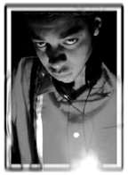

| n u c l e u s:: |
|
|  |
name:: titonton h. duvante aliases:: "tittytonton," "tommy thompson," "tauntaun," "ravioli" turntable specialties:: melodic techno and complex jungle. production specialties:: melodic techno produced for metamorphic, reflective, and the 21/22 corp. other specialties:: new event-coordinating entity called haiku, part of the self-styled melodic techno mafia, and can break in records very quickly. |
|
info:: titonton's musical sensibilities were formed at an early age, when such influential technopop songs as "cars" by GARY NUMAN and "firecracker" by YELLOW MAGIC ORCHESTRA (both from 1979) struck his musical ear. by the late '80s titonton was heavily into the techno sounds of DEPECHE MODE, ART OF NOISE, NEW ORDER, and the silky textures of COCTEAU TWINS. his interest led him to try to study studio engineering, to perhaps one day eventually make his own electronic music. unfortunately, his school of choice, OSU, no longer offered a major in that area, so he decided to pursue a more rigorous study of classical music to back his knowledge. t had always had an interest in the piano, and when his music was constantly compared to that of PHILIP GLASS, he eventually discovered and fell in love with classical minimalism, moving on to other artists such as STEVE REICH, MEREDITH MONK, LA MONTE YOUNG, and JOHN ADAMS. in the middle of his classical studies, a quirk of fate allowed T to purchase a keyboard workstation in 1990 (the same keyboard he uses today). then a chance meeting in the fall of 1991 with todd sines (at a record store) led him to begin working with todd on his new project, which was called BODY RELEASE. while he continued studying classical (including the presentation of several of his works) he also worked more intensely with the B/Re cru which soon added charles noel as their DJ. he also presented a 9-piece classical/techno fusion entitled "zalocar" in march of 1993. titonton eventually left his classical studies behind and embarked on a more serious investigation of techno, picking up DJing along the way as well, but he has never forgotten his classical influences, and even in his own solo work (including the "embryonic" ep on metamorphic records, and individual songs written for charles noel's 21/22 corporation, and an appearance on dego & mark mac's "deepest shade of techno II" compilation on reflective) he has always kept his sensitivity towards composed music. through these efforts, titonton has also made strong alliances with fellow "melodic techno" artists such as DEGO, DAN CURTIN, and MORGAN GEIST. a recent performance at the 6th ele_ment concert event, called CARBON (16 nov 96) was a culmination of many weeks of work, and a return to his classical roots, with the participation of his own string and voice ensemble called THE MARZIPAN ENSEMBLE (featuring leah hoover, ian jesse, carrie rinderknecht, and vince scaccatti) on several tracks. recent activites have included a brief trip to bourges, france, to DJ for our friends anyssa and stefan manceau, and the creation of a new event-throwing entity called HAIKU, which presented INTIMATE on march 14 (featuring a live performance by MORGAN GEIST) INDIGO on april 4 (featuring titonton in another live show with the MARZIPAN ENSEMBLE), and a collaboration event entitled METAMORPHOSIS on sept 20 (featuring a live performance by DAN CURTIN). [flyers for these events are viewable on the what.will.be page.] he has continued to DJ frequently throughout the midwest, and was most recently involved in an event organized by our friend bevin kelly in boston, which also featured a live show by morgan geist. titonton's association with morgan has also resulted in the release of an ep of material composed by both artists, which began as environ 003 but eventually became a release on the UK's fine house/techno imprint PHONO. he also has a track on the 21/22 corporation's "trace elements 2" compilation as well as releases by denmark's MULTIPLEX, and a second ep on cleveland's METAMORPHIC, all in the can. future projects include a solo ep for the 21/22 corporation as well as a possible release on a well-know detroit label. discography (title/artist name/label/date):: "embryonic" ep / titonton / metamorphic recordings / dec 1995 4-track melodic techno ep - "jizzak inna bizzi" / titonton / 21/22 corp / sep 1996 one of four artists on the "trace elements" techno compilation ep - "chronologic" / titonton / reflective UK / nov 1996 featured on "the deepest shade of techno II" _ "scrazzleniph" / titonton duvante / 21/22 corp / aug 1997 one of four artists on the "trace elements 2" techno compilation ep - "titonton & morgan ep" / titonton duvante & morgan geist / phono UK / oct 97 formerly environ 003 unreleased projects (forthcoming):: 4-track ep on metamorphic recordings - ep for multiplex _ one track by titonton & morgan on trace elements 3 |